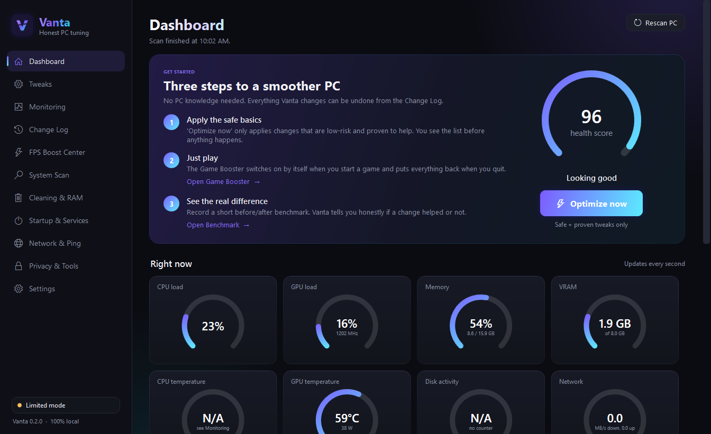

Vanta boosts your games automatically, cleans up RAM and junk, finds what's holding your PC back, and shows your real in-game ping. Everything it changes can be undone with one click.

In plain English, with the technical details one click away for people who want them.
Starts when a game launches, ends when it closes, and puts everything back, even if the game crashes. Per-game profiles and a hotkey.
After every match: average FPS, 1% lows, stutters, ping, temperatures and what held your PC back, compared with last time.
Frees memory without touching the apps you're using (Discord, OBS, Medal stay put). Can clean on its own when a game starts.
Finds the server your game is actually connected to and graphs ping, jitter and packet loss live. Plus speed and bufferbloat tests and a DNS benchmark.
Checks XMP/EXPO, Resizable BAR, drivers, drive health and Windows settings, then ranks what to fix first, with BIOS steps for your motherboard.
Junk cleaner that measures before deleting, startup apps, safe services presets, and privacy switches for ads, tracking, Copilot and Recall.
Most "optimizers" sell fear. Vanta tells you what actually works.
Works on Windows 10 (1809 or newer) and Windows 11, 64-bit.
Or the portable .zip if you'd rather not install anything.
Vanta needs admin rights to change Windows settings and read FPS.
Pick Simple or Full mode, apply the safe fixes, and choose what runs automatically.
More info → Run anyway. The full source code is on GitHub, and every release lists SHA-256 checksums so you can check your download.Yes. Vanta is open source under the MIT license. No paid tier, no ads, no "pro" features.
Vanta never injects anything into games or reads their memory. It changes Windows settings and reads the same performance events Windows' own tools use. Anti-cheat processes are never touched.
It depends on your PC, and Vanta won't promise numbers. Most gains come from fixing real problems, like RAM running below its rated speed, background apps, or the wrong power plan. The built-in benchmark tells you honestly whether a change helped.
Optimizers need admin rights and change system settings, which some antivirus programs flag on new, unsigned apps. Check the SHA-256 checksum against the release page, or build it yourself from the source.
Use Windows Settings → Apps. The uninstaller asks whether to undo every change Vanta made first.
Only for tests you start, the in-game ping while you play, and an optional check for new versions that you can turn off in Settings. Nothing about you or your PC is sent.